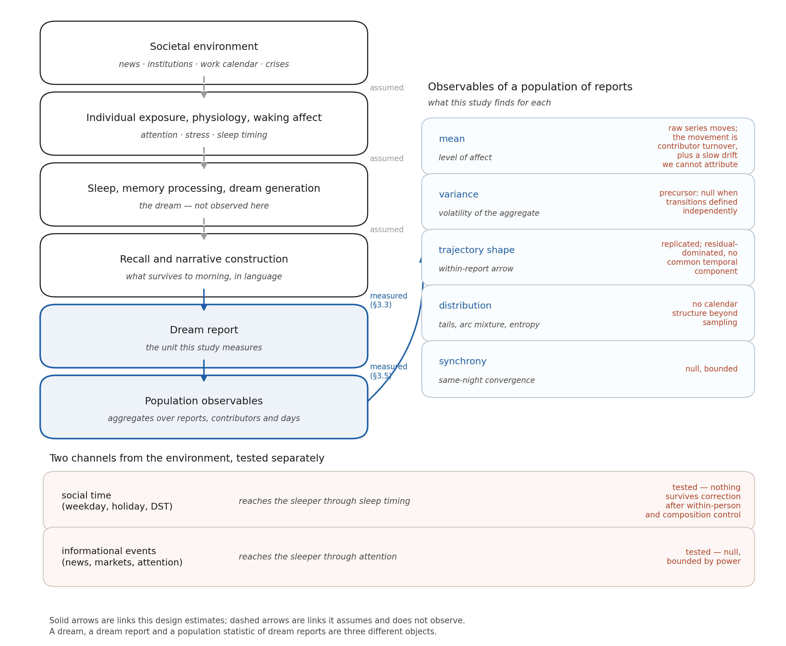
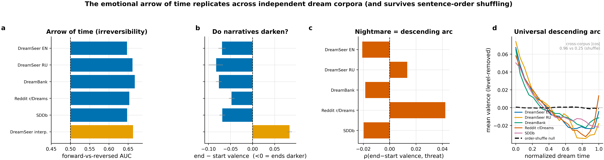
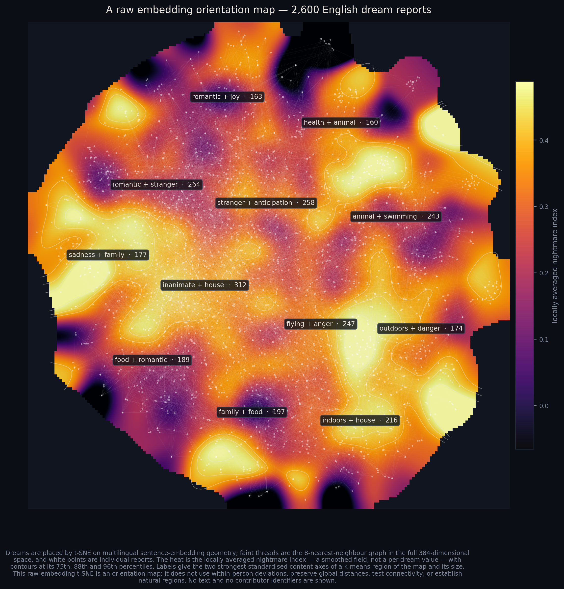
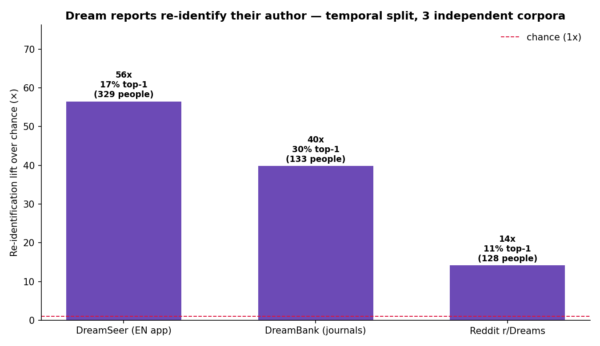

A popular account of Measuring a dreaming population. Numbers in the prose trace to that manuscript, and where the two disagree the manuscript wins. The two arc videos are the exception: they were built for this article and scored on a smaller sample, so read effect sizes from the paper, not from a video frame.
Berlin, 1933
Between 1933 and 1939 the journalist Charlotte Beradt went around Berlin asking people what they had dreamed. A doctor dreamed the walls of his flat had silently vanished, leaving him visible to the street. Others dreamed of forms they could not fill in, doors that would not shut, neighbours who denounced them. Her premise was that a population’s dreams might record something its public speech could not.
For ninety years that was a beautiful and untestable idea — you cannot run a controlled study on a vanished city. Then people started writing their dreams into apps, every morning, in numbers.
This study pooled more than 75,000 dream reports from four sources and two languages: 30,241 reports from 5,524 users of the DreamSeer app, plus roughly 45,000 from DreamBank’s archive of dream journals, the r/Dreams subreddit, and the Sleep and Dream Database. One scoring pipeline ran across all of them, so the corpora can be compared rather than merely stacked.
What that buys is a new kind of dial: a daily, population-scale readout of what a great many people say they dreamed. This article is about what the dial is sensitive to — which turned out to be stranger and more layered than the question we started with.

One caveat governs everything below, because it is structural rather than decorative. A dream, a dream report, and a statistic about a pile of dream reports are three different objects, and we only ever see the third. What reaches us was composed after waking, from memory, in language, for an audience, by someone who chose to type it in.
Dreams run downhill
This is the load-bearing result, and the one that survived the most attacks — everything else in this article is hedged against it.
Split a dream report into sentences, score each sentence for emotional tone, and you get a small trajectory. One at a time these are chaos. Averaged, they are not: the population’s dream report begins near neutral and ends darker than it started.
Left: 260 individual reports as unlabelled faint lines, with the running average in bold. Middle: the same reports with their sentences shuffled. Right: how the average settles as reports accumulate. Scored on a 3,000-report-per-language sample rather than the paper’s estimation sample, so read effect sizes from the manuscript. (source)
The middle panel is the entire argument. Same reports, same sentences, same scores — only the order scrambled — and the average goes flat. The descent therefore lives in narrative sequence, not in the scoring model and not in the fact that dreams are gloomy on average. Shuffling preserves the gloom and destroys the arrow.
Then the obvious objection: perhaps reports end dark because that is simply where the dream stopped, something frightening having woken the sleeper mid-fall. So we deleted the endings — six different ways, from removing the last sentence to keeping only the interior to splitting reports by whether they end on an awakening at all, plus a seventh arm that throws out the most threat-laden reports entirely.
Deleting the ending makes the descent deeper. In all seven corpus-and-instrument combinations. In this audit the last sentence of a dream report is, on average, a small lift — a relief coda at the moment of waking, though under the stricter scoring it is clearly positive in only one corpus of the five. Take it away and the fall gets worse. Across the 53 cells the full audit produces, the descent stayed negative in 52.
How far down is far? Ordinary prose drifts downward too — we ran first-person accounts of real events, literary fiction and encyclopedia openings through the identical pipeline, and all of them drift. So dreams are the extreme case of something writing in general does. Three of the five dream samples fall roughly two to five times further than every comparator, across all nine contrasts: DreamSeer in English, DreamSeer in Russian, and DreamBank’s archival journals — two of the three being the same app, which bounds how broadly this travels. Treat the multiplier as a rough size comparison rather than a measurement: one of these ratios carries an interval running from 2.3 to 8.5. It is about where a report ends relative to where it began, and on the measure that uses every sentence instead of the two ends, those three separate in six of the nine contrasts. The other two dream samples, Reddit and the Sleep and Dream Database, do not separate from the waking comparator on any measure of descent at all.
The difference from waking writing also turns out to sit at the beginning rather than the end. Dream reports start nearer neutral and then fall; first-person accounts of real events start already dark, at their subject, and stay there. It is a difference of depth and of starting point, not of how things finish.
Which raises the obvious objection — dream reports start higher, so of course they have further to fall — and it is already answered. The comparison is expressed in units of how much each corpus’s own sentences ordinarily move, so a corpus does not earn a bigger number by being more volatile or by starting anywhere in particular. Standardizing that way widens the central contrast rather than rescuing it: DreamSeer English against waking narrative goes from 4.4 to 5.2.

A regularity that no single dream contains
This is the part that is properly about populations, and it is my favourite result in the project.
No individual dream has the arc. Average twenty reports and you still get a jagged mess that looks nothing like the smooth curve. The shape is not sitting in the data waiting to be found — it condenses out of it.
Left: the running average over one group of contributors, converging on the finished average of a completely separate group (dashed). Middle: the same, with sentence order shuffled. Right: the distance between the two groups shrinking, against the dashed line that averaging independent* noise would give. This is a demonstration built for this article rather than a result from the paper — it illustrates a point the manuscript makes in prose, on the same 3,000-report-per-language sample. (source)*
The right-hand panel is the necessary pedantry. Comparing a running average to its own final value guarantees convergence and demonstrates nothing, so the people were split in two — 487 contributors on each side, nobody on both — and one group has to predict the other group’s finished arc. It does.
That is a strong statement about a population. The smooth curve is not an artefact of adding up the same reports, and not a classifier slowly memorising a few prolific dreamers. It is a stable property of the population, reconstructible from strangers.
And the direction is not only an aggregate: between 56% and 88% of contributors, depending on the corpus, darken on their own average. The smooth curve is a population object; the downward tilt belongs to people.
It converges slightly slower than independent averaging would predict, which is itself a population fact rather than a blemish — those 3,000 reports come from 974 people, so each new report is partly a repeat of someone already counted, and repeat draws buy less than fresh ones.
One continent
Embed every report as a point in semantic space, draw a link whenever two reports are similar enough, and ask what you get: an archipelago of unrelated stories, or something connected?
Left: 420 dream reports, linked when more similar than the current threshold — a small sample drawn for legibility, which comes apart at a lower threshold than the full measurement does. Middle: the same numbers with each semantic dimension shuffled independently across reports, preserving every dimension’s distribution and destroying only what makes two reports alike. Right: the actual measurement, on 5,000 English DreamSeer reports across three subsamples. (source)
At a similarity threshold of 0.50, 95% of reports belong to a single connected mass. The shuffled null is at 0%. Push the threshold higher and the real corpus keeps its continent long after the null has crumbled into dust.
That is a population’s language holding together, and it is narrative language rather than dreaming’s private property: matched waking accounts and fiction produce the same continent, interleaving with dreams between 89% and 96% connectivity. The only corpus that comes apart is the non-narrative one — encyclopedia openings hold 67% where dreams hold 95%, and collapse to 15% a little higher up, by a margin nobody needs a significance test to see, which is just as well, because no formal test of that gap was run. Which is the more interesting version of the result, and the second thing here I would defend anywhere: dream reports are fully paid-up members of narrative language, and this geometry tells narrative from non-narrative. (One boundary: the encoder saw only the first 256 characters of each report, so this is a map of dream openings.)

A map, not a test. The projection preserves neither distances nor areas and the shading is a smoothed annotation — it is here to orient, and carries no evidence about the section above.
The feature network over calendar time. Report volume and contributor turnover are plotted alongside, because platform growth remains a rival explanation for anything that appears to breathe.
Your reports are written in your handwriting
Train a classifier on someone’s earlier dreams, test it on their later ones, and it identifies them far above chance: 56 times better in the app data, 40 times in DreamBank’s journals, 14 times among Reddit posters. Three corpora, two of them independent of the app. (This one is established context from a companion analysis rather than a result of this study — it is here because it locates everything else.)

“Better than chance” is doing real work in that sentence. The candidate pools were a few hundred people per corpus — 329, 133 and 128 — so chance runs from about one in a hundred and thirty to one in three hundred, and the absolute top-choice rate is 17% in the app data. Impressive, not clairvoyant. And what gets identified is the signature of a written report: the words someone reaches for, content and style together, not a readout of anyone’s unconscious.
It is stable over time and survives a near-duplicate guard. Which means a corpus of “anonymous” dream reports is not anonymous in the way people assume. That is a privacy result before it is a psychology result, and it is why no raw dream text from this project has ever left the machine it was analysed on.
Only the machine consoles you
The app also generates an automated interpretation of every dream. Those interpretations lift +0.26 in their final sentence alone — more than three times the largest closing step anywhere else in the design, dreamt, lived, invented or encyclopedic. Delete that last sentence and they stop rising altogether. The consolation is appended, not reasoned toward.
Most human corpora do close with a small positive step, so comfort is not the machine’s invention. What belongs to the machine alone is comfort large enough to reverse the direction of the entire account. It is a measurable property of one production system working from one prompt template — and worth measuring, now that a great many people receive their emotional readings from something like it.
What gets into the dial
So: what from the outside world actually shows up in a population’s dream stream?
A pandemic gets in — as vocabulary. (A check that the instrument works, not a finding.) DreamSeer’s window opens in March 2024, so COVID is out of its reach entirely; this test runs on an archive of 17,994 r/Dreams reports spanning 2019 and 2020. Explicit pandemic vocabulary rose ninefold, from 0.4% to 3.7% of reports, a fitted jump of 4.68 percentage points — larger than all 44 placebo cutoffs tested at other dates. So the instrument does resolve the event. But a rise in the words covid and lockdown after March 2020 is close to semantically guaranteed whether people were dreaming about the pandemic or merely describing their dreams in the language everyone had started using, which is why the paper reads it as a passed manipulation check rather than a discovery.
The latent themes are the interesting part, and they did not move detectably: not contagion, illness, contamination, death or masks, with every placebo p ≥ .37. That non-detection has a reach, though — the test could only have caught movements of roughly two to eight percentage points depending on how common a theme already was, so it bites for the rarest themes and is underpowered for the commonest. And two neutral control themes with no lockdown story at all, vehicle and animal, shifted about 2.5 points, which establishes that drift in who was posting displaces these rates by about that much on its own. The shock entered the words. Whether it entered the dreams is not something this measurement can settle.
The institutional week gets in. (A single uncorrected contrast.) Friday reports are slightly lighter than Monday reports in English — a small effect (p = .008). It does not replicate in Russian, and it splits almost exactly in half between a change in who reports on Fridays and a change within the same people — of which only the compositional half is individually resolvable, while the within-person half cannot be separated from zero at this sample size. The channel is plausible: the weekday-to-weekend sleep shift averages more than half an hour, and sleep timing is a real route by which the calendar reaches the sleeper. But this is a probe, not a result.
The stream also has its own weather
One population-scale pattern is not about the outside world at all, and it is the most tantalising thing in the project.
Ahead of the sharpest darkenings of the corpus’s own nightmare content — the days when that content rises fastest — the variance of it rises first. Not the average, the spread (Kendall’s τ = +0.236). Rising variance before a transition is one of a family of early-warning signatures studied in ecology and psychiatry.
This is frontier rather than finding, and worth being blunt about. There are only twelve such episodes. The signal they sit on is mostly noise: between four-fifths and nine-tenths of the daily nightmare series’ movement is sampling error, depending on whether you score the raw series or the detrended one the precursor is actually computed on. The companion signature that would license the phrase “critical slowing down” — rising autocorrelation alongside rising variance — is absent, and we looked for it. It clears four of the five surrogate constructions we built rather than five. The episodes are excursions of this series against itself, not entries from a news list, so nothing here says the population anticipates events. And the broader literature is not on our side: the appraisal we cite finds little support for these early-warning signals as generic predictors in clinical psychology at all. It is frozen for re-testing at thirty episodes and a second densely dated corpus.
The week-to-week weather of public mood does not get in. This is a specification of the instrument rather than a shrug. Thirteen dream axes were run against nine societal indicators — news tone, news volume, war and worry searches, Wikipedia crisis and hope attention, a news-sentiment index, a prediction market where people bet on how bad things will get, and the horror share of film releases — 117 combinations in all, on the English-language weekly series. Nothing survived correction for multiple testing, under four different estimators and two kinds of surrogate null. A separate battery covering markets and macroeconomics came back the same way.
The bound matters more than the null, and it is uneven in a way that runs against us. With two years of weekly data the dial could see a correlation of about 0.30. Correcting for how noisily each axis is measured week to week, a true association of 0.38 on the best-measured axes — 0.55 to 0.69 on the two negativity axes anyone would ask about first — would still have been invisible. And on the worst-measured axis, negative sentiment, the correction has no upper bound at this number of weeks: there, the null bounds nothing at all. The paper calls that asymmetry the single most important qualification on this null, because the axes it constrains tightly are not the axes anyone cares about.
So what is ruled out is coupling large enough for this design to see, in these series, at weekly resolution. Anything smaller or slower is untested rather than refuted, and coupling in the Russian cohort is untested outright — those indicators are all English-language and US-centred, so the Russian reports were tested against somebody else’s news. Nor was every cell empty: weeks of high crisis attention did recur as weeks of darker, more dispersed reports, in several places and without surviving correction. That is where a sharper instrument should point next.
Different floors
A population of dream reports is organised at several levels at once, and the levels do not move together.
Inside a single report there is a robust, order-dependent emotional descent — present in every corpus and both languages under the screening instrument, in four of the five under the stricter one, and getting deeper rather than weaker when you attack it. Across the reports of one person there is a signature strong enough to re-identify them. Across the whole population there is a single connected continent of narrative language, a weekly rhythm whose resolvable half is composition, a restlessness that may or may not be an early warning, and a vocabulary that jumped ninefold when a pandemic arrived.
Beradt wanted to know whether the building had a ground floor open to the street. On this evidence the opening is narrower than she hoped — wide enough for events large enough to become words, closed to the week-to-week weather of public mood — and the architecture worth exploring is upstairs, inside the individual night, where nobody was looking for it.
Reproducing this
Everything above is generated by scripts in the repository, and the manuscript indexes each number to the analysis that produced it (Supplementary Reproducibility table, scripts 001–026). The three videos are built by 2026-08-24-02-video-arrow.py, 2026-08-24-03-video-percolation.py and 2026-08-24-04-video-emergence.py; each writes a short .md beside its output recording the numbers on screen and the sample they came from. The percolation script recomputes the published curve and refuses to render if it disagrees. All three sit outside the manuscript’s numbered reproducibility index: the percolation video reproduces a figure in it, and the two arc videos are illustrations built for this article.
Raw dream text and user identifiers are never published — see docs/ETHICS.md. What is shareable is code plus de-identified aggregates: every released cell that carries its own denominator is checked against a floor of 20 reports and 5 contributors by a script that refuses to build the public release if it fails.
Individual reports do appear here, in three places, and never as text: the faint unlabelled lines in the first video, the 420 nodes in the percolation video, and the points of the galaxy map. None carries a word of narrative, a date or an identifier — they are drawn to give the aggregates something to be aggregates of. It is also why the running averages in both arc videos start at twenty reports rather than at one. For the original corpora, go to their sources — DreamBank, the Sleep and Dream Database, and Reddit’s own archives.